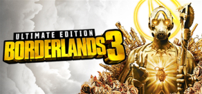
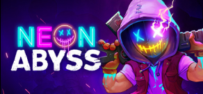
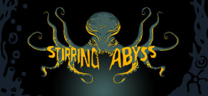
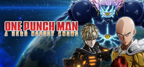

ONE PIECE World Seeker
BANDAI NAMCO
Entertainment
For PC
Залиште компас будинку і разом з Луффі вирушайте в пригоду, де вам належить відкрити
безліч
таємниць на новий острів!
Динамічні «гумові» бої
• У ролі Манка Д. Луффі досліджуйте острів.
• Оригінальний сюжет
На загадковому Тюремному острові відбуваються дивні події. Включає оригінальних
персонажів,
створених самим Ейітіро Одою...
NARUTO TO BORUTO: SHINOBI STRIKER
BANDAI NAMCO Entertainment
For PC
BANDAI NAMCO Entertainment
For PC
Франшиза «Наруто» повернулась із абсолютно новим досвідом у NARUTO TO BORUTO: SHINOBI
STRIKER!Ця
нова гра дозволяє геймерам битися як команда з 4 осіб, щоб конкурувати з іншими
командами в
Інтернеті! Графічно SHINOBI STRIKER також побудований з нуля в абсолютно новому
графічному
стилі...
Dark Souls: Remastered
BANDAI NAMCO Entertainment
For PC
BANDAI NAMCO Entertainment
For PC
Dark Souls: Remastered - це перевидання найпершої частини культової рольової серії, яке
пропонує
гравцям підтягнуту графіком, збільшена кількість кадрів в секунду, різні балансові
правки, а
також вихід на портативної Nintendo Switch....
ELEX
THQ Nordic
For PC
THQ Nordic
For PC
ELEX - ретельно опрацьована динамічна рольова гра, створювана відзначеними нагород
авторами
серії Gothic. Її дія розгортається в новій постапокаліптичній науково-фантастичної
всесвіту:
гравців чекає величезний безшовний світ, повний яскравих персонажів, гротескних
мутантів,
моральних дилем і напружених пригод....

FIFA 21
Electronic Arts
For PC
Electronic Arts
For PC
Продовження легендарної серії яка виходить щороку. Оновлення рейтингів футболістів, ще
реальніша
фізика гравців та м'яча.На вулицях і на стадіонах - FIFA 21 надає ще більше можливостей
для гри,
включаючи такі турніри,
як UEFA Champions League і CONMEBOL Libertadores.

DIRT 5 Amplified Edition
CodeMasters
For PC
CodeMasters
For PC
У доповненому виданні у кожного гравця буде по три наворочених авто в гаражі (Ariel
Nomad
Tactical, Audi TT Safari, VW Beetle Rallycross), три спонсора зі свіжими цілями,
нагороди і
забарвлення, а також нововведення, про які ми ще оголосимо, - все це виключно для
доповненого
видання, разом з надбавками до валюти і досвіду ...

NEED FOR SPEED HOT PURSUIT REMASTERED
Electronic Arts
For PC
Electronic Arts
For PC
Відчуйте азарт погоні і отримаєте справжній драйв в Need for Speed Hot Pursuit
Remastered на
ПК. Дайте волю шаленої жадоби швидкості - приміряйте на себе роль злочинця або служителя
закону і носитеся на найкрутіших і потужних машинах світу. Перехитрити копів або
нейтралізуйте
порушників, використовуючи свій арсенал ...

PES 2020
Konami Digital Entertainment
For PC
Konami Digital Entertainment
For PC
Нові можливості: Геймплей: Ведіть м'яч як ніколи раніше завдяки новим динамічним
навичкам
дриблінгу, новим
технікам першого торкання і точно вивіреної фізикою м'яча, і все це створено завдяки
докладним
консультацій з відомим півзахисником Андресом Іньєста.

Captain Tsubasa: Rise of New Champions
BANDAI NAMCO Entertainment
For PC
BANDAI NAMCO Entertainment
For PC
Captain Tsubasa: Rise of New Champions - аркадний симулятор, що дозволяє поглянути на
футбольний
жанр з нового боку.

Borderlands 3
2K
For PC
2K
For PC
Borderlands 3: Ultimate Edition - найповніше видання, яке включає в себе базову гру, все
6
доповнень і все бонусні предмети зовнішнього вигляду! Грайте за 1 з 4 шукачів Сховища -
самих
безбашенних мисливців за скарбами в усьому фронтир...
Control - Ultimate Edition
505 Games
For PC
505 Games
For PC
Гра Control, що отримала більше 80 нагород, являє собою візуально приголомшливе пригода
від
третьої особи, яка не дозволяє розслабитися ні на секунду. Поєднуючи структуру відритого
світу з
фірмовим побудовою ігрового середовища і драматичним сюжетом від відомого розробника
Remedy
Entertainment, Control забезпечує...
Destiny 2: Legendary Edition
Bungle, Inc
For PC
Bungle, Inc
For PC
Пориньте у захоплюючий світ науково-фантастичного бойовика Destiny 2 з усіма
розширеннями за
допомогою «Destiny 2: Легендарне видання». Пробудити до життя свого Варта і
насолоджуйтеся
кінематографічним сюжетом в постійно розвивається всесвіту...

Neon Abyss
Team 17
For PC
Team 17
For PC
Neon Abyss поєднує динамічний сюжет в стилі «стріляй і біжи» зі складною механікою жанру
roguelike. У цій грі вам належить приміряти на себе роль учасника Похмурого загону,
зібраного
Аїдом, який хоче увірватися в Безодню і перемогти нових богів. Смерть - це ще не кінець:
після
смерті ви станете ще сильніше, ніж раніше...

SpellForce 3: Fallen God
THQ Nordic
For PC
THQ Nordic
For PC
У маленького племені тролів-кочівників одна мета: вижити. Браконьєри знищують їх заради
іклів,
недуга забирає життя родичів - надія майже втрачена. Але тут таємничий ельф пропонує
юному вождю
Акрогу шанс на порятунок. Потрібно лише воскресити полеглого бога...

Hammerting
Team 17
For PC
Team 17
For PC
Hammerting - це вертикальний симулятор гномів шахтарської колонії з елементами RPG.
Керуйте кланом забавних гномів, починайте епічні шахтарські проекти, куйте легендарні
мечі і
закопують якомога глибше, щоб знайти славу, багатства ... І небезпеки...

Stirring Abyss
Slitherine Ltd.
For PC
Slitherine Ltd.
For PC
Stirring Abyss - покрокова тактична інді-гра з вираженими елементами РПГ, в якій вам
належить
розкрити древні таємниці глибин в антуражі класичних історій Говарда Лавкрафта...

Pacer
For PC
For PC
PACER® - це високооктанові антіграв-гонки з максимальним градусом руйнування. обженете і
перебейте супротивників на 14 унікальних трасах з безліччю варіантів (Ніч, Дзеркально,
Навпаки). Налаштуйте болід (доступно 5 видів) і зброю (11 видів) - і виходите на старт
кампанії, одиночної гонки (8 режимів) ...
Monster Truk
Nacon
For PC
Nacon
For PC
Перший симулятор монстр-траків! Від Лас-Вегаса до Орландо, змагайтеся з досвідченими
пілотами в
гонках по драг-рейсингу і
змаганнях з фрістайлу! Дрифт на місці, їзда на задніх або бічних колесах - в грі ви
зможете виконати всі ці трюки, але перш за доведіть свою машину до досконалості.
Монстр-траки
чудові, але впоратися з ними не так вже й просто ...

DIRT 5
CodeMasters
For PC
CodeMasters
For PC
DIRT 5 - нова смілива гонка по бездоріжжю від Codemasters. Відправляйтеся в подорож по
самим
знаменитим маршрутами в світі. Вибирайте будь-які автомобілі з числа брали участь в
знаменитих
ралі, вантажівок, героїв GT і багатьох інших авто зі списку і беріть участь на них в
гонках.
DIRT 5
- це нове покоління екстремальних гонок ...

Horace
505 Games
For PC
505 Games
For PC
Ексцентричний британський гумор поєднується з кінематографічним наративом, якого ще
ніколи не
бачили у пригодницькій грі на платформі!
Горацій - це сюжетна, платформна гра, наповнена ностальгічними популярними посиланнями
на
культуру, яка приверне усмішку будь-якому геймеру, котрий любить 8 та 16 бітну еру...

ONE PUNCH MAN: A Hero Nobody Knows
BANDAI NAMCO Entertainment
For PC
BANDAI NAMCO Entertainment
For PC
Боріться з персонажами One Punch Man! Грайте за улюбленого героя ... або станьте їм!
Чим ви не герой?
Створіть аватара і виберіть здатності до смаку!
Ураганні бої!
Сутички 3х3 з подіями зі світу One Punch Man....